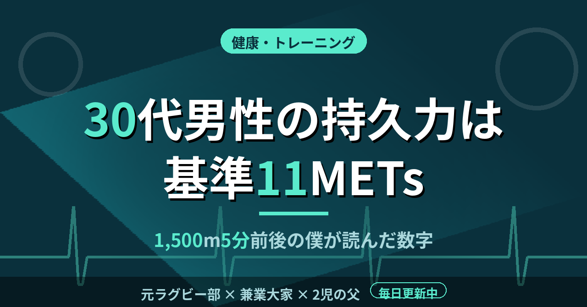

hohemaro15
ラグビー20年、不動産1棟。調べてから書く記録
このサイトについて
小学5年でラグビーを始めて、大学まで20年続けた。大阪の激戦区で6年、同志社大で4年。ポジションはユーティリティバックス。
今はメーカーで設備の電気を担当しながら、兵庫県尼崎市に木造9戸の一棟アパートを運用している。2児の父。
経験談だけで終わらせないために、書く前に必ず制度と統計を調べることにしている。数字が確認できなかった話は書かない。
書いていること
ラグビー
小5から大学まで20年。大阪の激戦区で見たこと、カテゴリが上がるたびに起きたこと。
不動産・資産運用
2016年に検討を始めて2026年に1棟目。判断基準と、断り続けた10年の話。
健康・トレーニング
増量の失敗と成功、サプリで肝臓の数値を悪くした経験、続けている設計。
子育て・家族
2歳と0歳を育てながらの時間の使い方と、資産形成の時間軸。
最近の記事
-
 ラグビー
ラグビー
花園に出る大阪の3校は部員73〜121人。経験者が自分だけの中学部で始めた僕が数えた
中学のラグビー部に入ったとき、経験者は僕しかいなかった。ラグビーは1チーム15人でやる競技だ。人数を揃えること自体が、最初の課題だったと記憶している。…
-

健康・トレーニング30代男性の持久力の基準は11METs。1,500mを5分前後で走る僕が読んだ数字
僕は1,500mを5分前後で走れる体力を、ずっと保ってきた。もともと足が速く、持久系も得意だったからだ。その体力が健康の数字でどのあたりにあたるのか、厚生労働省の資料で確かめた。…
-
 子育て・家族
子育て・家族
待機児童は9年ぶりに増えて2,435人。ゼロの自治体は89.1％。2歳と0歳の父が読んだ数字
子どもが2人いると、保育園という言葉がニュースに出るたびに手が止まる。2歳と0歳の父として、8月に発表された待機児童の数字を一度ちゃんと読んでみた。…
-
 不動産・資産運用
不動産・資産運用
管理手数料は賃料の5％前後が相場。月5,000円で半管理の僕が、自分でやる仕事
管理会社に払っているのは月5,000円だ。引渡しから7か月、この金額で何が買えていて、何が僕の手元に残っているのか。一度、仕事を全部書き出してみた。…
-
 健康・トレーニング
健康・トレーニング
たんぱく質の推奨量は1日65g。基準を見ずにプロテインを飲み続けた増量期
増量期の僕は、プロテインは多く飲むほど効くと信じていた。1日に何gのたんぱく質が必要なのか、その基準を一度も見ないまま、ただ量を足していた。最近になって公的な数字を調べ、当時の自分に足りなかったものがはっきり見えた。…
-
 ラグビー
ラグビー
関西の大学ラグビーは全7節。選手権に進めたのは3校だけ。4年間プレーした僕が思うこと
今年の関西大学リーグの日程表を見て、シーズンの短さに改めて驚いた。大学ラグビーは4年間あるのに、公式戦で勝負がつく期間は毎年ごく限られている。同志社でプレーした身として、数字で整理しておく。…